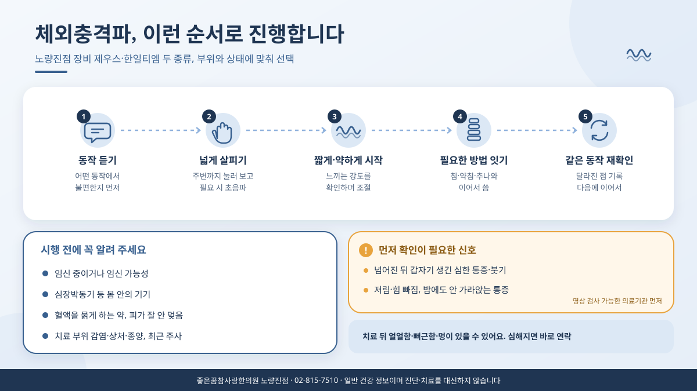
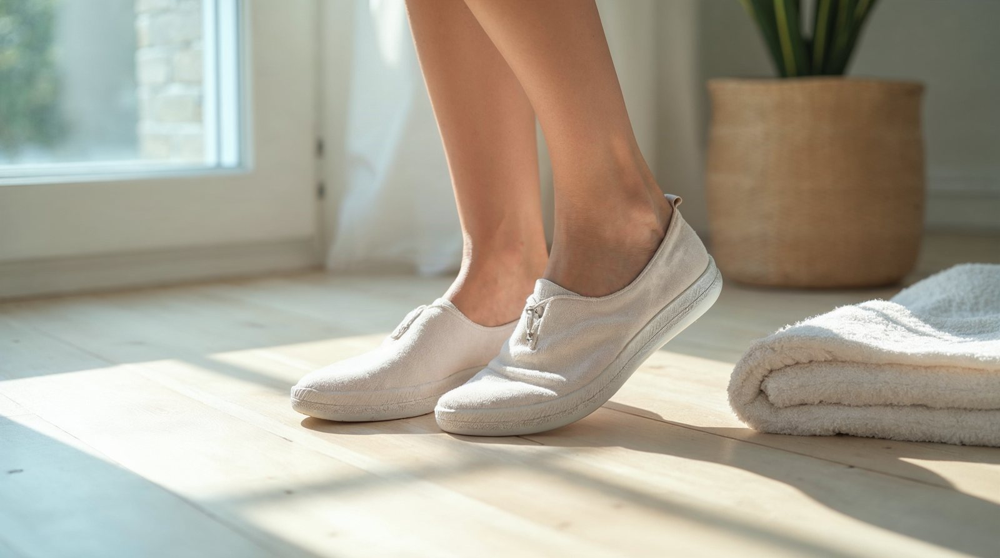

체외충격파는 몸 밖에서 아픈 부위로 충격파 에너지를 전달하는 방법입니다. 좋은꿈참사랑한의원은 불편한 동작을 먼저 듣고 예민한 지점을 찾아 시간과 강도를 조금씩 조절하며, 필요할 때 침·약침·추나와 이어서 씁니다.
여쭙는 것
- 어느 동작에서 가장 불편하신가요? (아침 첫걸음, 팔을 들 때, 손목을 비틀 때)
- 언제부터 아팠고, 그동안 받은 치료나 주사가 있나요?
- 밤에도 아프거나 쉬어도 가라앉지 않나요?
생활에서 해 볼 것
- 통증을 부르는 동작의 횟수부터 줄이기(오래 서 있기, 손목 비틀기 등)
- 발바닥이 아프다면 쿠션 있는 신발을 신고 맨발로 오래 서 있지 않기
- 치료받은 날은 그 부위로 무리한 운동이나 무거운 짐 들기 피하기
한의원에서 함께 살필 것
- 같은 동작에서 몇 달째 통증이 반복되는 경우
- 쉬면 괜찮다가 다시 움직이면 같은 자리가 아픈 경우
- 통증 때문에 걷기, 계단, 집안일이 불편해진 경우
먼저 확인이 필요한 신호
- 넘어지거나 부딪힌 뒤 갑자기 생긴 심한 통증과 붓기
- 아픈 부위가 붉고 뜨거우며 열이 나는 경우
- 저림이나 힘 빠짐이 함께 있는 경우

체외충격파는 몸에 칼을 대지 않고, 몸 밖에서 아픈 부위로 충격파 에너지를 전달하는 방법입니다. 주로 힘줄과 인대가 뼈에 붙는 자리, 오래 뭉친 근육 주변처럼 통증이 쉽게 가라앉지 않는 부위에 씁니다. 좋은꿈참사랑한의원에는 제우스와 한일티엠 두 종류의 체외충격파 장비가 있어, 부위와 상태에 맞는 장비를 골라 진행합니다.
왜 이런 불편이 생길 수 있나요
체외충격파를 상담하러 오시는 분들의 통증은 대개 오래되었거나, 같은 동작에서 반복된다는 공통점이 있습니다.
- 같은 동작을 오래 반복해 힘줄이 붙는 자리에 부담이 쌓인 경우(마우스와 스마트폰, 계단, 무거운 짐)
- 나이가 들며 힘줄의 탄력이 줄어 작은 부담에도 예민해진 경우
- 운동량이나 걷는 거리를 갑자기 늘린 경우
- 발바닥은 체중, 오래 서 있는 일, 바닥이 얇은 신발이 겹친 경우
- 어깨 힘줄 안에 석회가 생긴 경우도 있어, 영상으로 확인이 필요할 수 있습니다.
자주 하는 오해
- 충격파는 아플수록 효과가 좋다고 여기기 쉽지만, 강도가 높다고 반드시 좋은 것은 아니어서 견딜 수 있는 범위에서 조절합니다.
- 한 번 받으면 끝난다고 생각하기 쉽지만, 횟수와 간격은 부위와 반응에 따라 달라 진료 때마다 다시 정합니다.
- 충격파만 받으면 된다고 여기기 쉽지만, 통증을 부르는 동작을 줄이고 생활 습관을 함께 바꿔야 같은 자리가 다시 아픈 일을 줄일 수 있습니다.
- 침과 충격파는 같은 것이라고 생각하기 쉽지만, 침은 경혈과 근육에 직접 자극을 주고 충격파는 몸 밖에서 에너지를 전달합니다. 상태에 따라 하나만 하거나 함께 진행합니다.

예를 들면 이런 경우입니다
- 예를 들어 마우스와 키보드를 오래 써서 팔꿈치 바깥쪽이 몇 달째 시큰한 직장인이라면, 손목을 비트는 동작을 먼저 확인하고 아픈 자리 주변까지 넓게 살핍니다.
- 예를 들어 아침 첫걸음에 발뒤꿈치가 아픈 분이라면, 발바닥과 종아리를 함께 눌러 보고 필요하면 초음파로 근막 주변을 확인한 뒤 치료 부위를 정합니다.
- 예를 들어 팔을 들 때마다 어깨가 걸리는 분이라면, 어떤 높이에서 아픈지 확인하고 석회가 의심되면 영상 확인부터 이야기합니다.
먼저 이렇게 여쭙니다
- 어느 동작에서 가장 불편하신가요? (아침 첫걸음, 팔을 들 때, 손목을 비틀 때)
- 언제부터 아팠고, 그동안 받은 치료나 주사가 있나요?
- 밤에도 아프거나 쉬어도 가라앉지 않나요?
- 혈액을 묽게 하는 약을 드시거나, 몸 안에 심장박동기 같은 기기가 있나요?
이런 순서로 진행합니다
- 동작을 먼저 듣습니다: "어디가 아픈가"보다 "어떤 동작에서 불편한가"를 먼저 여쭙니다.
- 아픈 자리를 넓게 살핍니다: 아픈 한 점만이 아니라 주변까지 눌러 보고, 필요하다고 판단될 때 초음파로 힘줄 상태를 함께 봅니다.
- 짧게, 약하게 시작합니다: 환자분이 느끼는 강도를 확인하며 시간과 강도를 조금씩 조절합니다.
- 필요한 방법을 잇습니다: 필요하다고 판단될 때 침, 약침, 추나와 이어서 씁니다.
- 같은 동작으로 다시 봅니다: 달라진 점을 기록하고 다음 진료에서 이어서 여쭙니다.
모든 분께 같은 횟수와 강도를 적용하지 않습니다. 반응이 충분하지 않으면 방법을 바꾸고, 필요하면 다른 의료기관 진료를 안내합니다.
시행 전에 꼭 알려 주세요
- 임신 중이거나 임신 가능성이 있는 경우
- 심장박동기 등 몸 안에 넣은 기기가 있는 경우
- 혈액을 묽게 하는 약을 먹고 있거나 피가 잘 멎지 않는 경우
- 치료할 부위에 피부 감염, 상처, 종양이 있거나 있었던 경우
- 치료할 부위에 최근 주사 치료를 받은 경우
치료 뒤에 있을 수 있는 반응
치료 직후 그 부위가 얼얼하거나 뻐근하고, 붉어지거나 멍이 들 수 있습니다. 대부분 며칠 안에 가라앉지만, 통증이 오히려 심해지거나 오래가면 바로 알려 주세요.
스스로 점검해 보세요
- 같은 동작에서 아픈 일이 몇 주 넘게 반복된다
- 쉬면 괜찮다가 다시 움직이면 같은 자리가 아프다
- 아픈 자리를 누르면 한 점이 뚜렷하게 아프다
- 아침 첫걸음이나 팔을 들 때처럼 아픈 동작이 분명하다
- 통증 때문에 걷기, 계단, 집안일이 불편해졌다
- 혈액을 묽게 하는 약을 먹고 있거나 몸 안에 기기가 있다
마지막 항목에 해당한다면 시행 전에 꼭 알려 주세요. 해당 항목은 진료 때 말씀해 주시면 상담이 쉬워집니다.

일상에서 먼저 해 볼 수 있는 것
- 통증을 부르는 동작의 횟수부터 줄이기(오래 서 있기, 손목 비틀기 등)
- 발바닥이 아프다면 쿠션 있는 신발을 신고 맨발로 오래 서 있지 않기
- 치료받은 날은 그 부위로 무리한 운동이나 무거운 짐 들기 피하기
- 아침에 첫발을 딛기 전 종아리와 발바닥을 가볍게 풀기
한의원에서 함께 살필 수 있는 경우
- 같은 동작에서 몇 달째 통증이 반복되는 경우
- 쉬면 괜찮다가 다시 움직이면 같은 자리가 아픈 경우
- 통증 때문에 걷기, 계단, 집안일이 불편해진 경우
좋은꿈참사랑한의원에서는 먼저 불편한 동작을 충분히 듣고, 필요하다고 판단될 때 초음파로 아픈 자리를 확인한 뒤 체외충격파·침·약침·추나 가운데 상태에 맞는 방법을 정합니다. 귀가 전에는 집에서 피할 동작과 다음 진료에서 다시 확인할 동작을 알려 드립니다.
첫 방문에는 불편한 동작을 먼저 여쭙고, 통증 위치와 압통점을 확인합니다. 필요하다고 판단되면 초음파로 힘줄과 주변 조직을 살펴 주요 치료 부위를 정하고 기록하며, 제우스와 한일티엠 가운데 부위에 맞는 장비를 고릅니다. 다시 오시면 치료 뒤 반응과 같은 동작에서 달라진 점부터 이어서 여쭙고 다음 치료 방향을 정합니다.
얼마나 지켜보고, 언제 상담하면 좋을까요
- 치료 직후 얼얼함이나 뻐근함은 대개 며칠 안에 가라앉습니다. 그 뒤 같은 동작에서 달라진 점을 1~2주 기록해 보세요.
- 몇 차례 받아도 같은 동작에서 변화가 없다면 방법을 바꾸거나 다른 의료기관 진료를 함께 검토합니다.
- 치료 뒤 통증이 오히려 심해지거나 붓고 열이 난다면 기다리지 말고 바로 알려 주세요.
이렇게 기록해 오시면 상담이 쉬워집니다
- 가장 아픈 동작 한두 가지와 그때의 통증 정도(0~10점)
- 통증이 시작된 시기와 그 무렵 달라진 생활(운동, 신발, 업무)
- 이전에 받은 주사·치료와 날짜
- 복용 중인 약, 특히 혈액을 묽게 하는 약
- 아픈 동작과 그 동작을 하루에 몇 번 하는지
- 치료받은 뒤 며칠 동안의 반응(얼얼함, 붉어짐, 멍)
- 그동안 받은 주사나 다른 치료 내역
이런 증상은 먼저 확인이 필요합니다
- 넘어지거나 부딪힌 뒤 갑자기 생긴 심한 통증과 붓기
- 아픈 부위가 붉고 뜨거우며 열이 나는 경우
- 저림이나 힘 빠짐이 함께 있는 경우
- 밤에 쉬어도 가라앉지 않는 통증이 이어지는 경우
이런 경우에는 영상 검사가 가능한 의료기관에서 먼저 확인받으시기를 권합니다. 복용 중인 약은 처방한 의사와 상의 없이 줄이거나 끊지 않습니다.
비용과 적용 여부
적용 대상, 횟수, 비용, 건강보험 적용 여부는 진찰 후 안내해 드립니다.
함께 읽으면 좋은 글
- 아침에 첫발을 디딜 때 발바닥이 아프면 어떤 점을 살펴보나요?
- 계단을 내려갈 때 무릎이 아프면 한의원에서는 무엇을 먼저 묻나요?
- 같은 허리 통증인데 왜 사람마다 쓰는 장비가 다른가요?
한눈에 보는 표
| 구분 | 핵심 |
|---|---|
| 여쭙는 것 | 어느 동작에서 가장 불편하신가요? (아침 첫걸음, 팔을 들 때, 손목을 비틀 때) 언제부터 아팠고, 그동안 받은 치료나 주사가 있나요? |
| 생활에서 해 볼 것 | 통증을 부르는 동작의 횟수부터 줄이기(오래 서 있기, 손목 비틀기 등) 발바닥이 아프다면 쿠션 있는 신발을 신고 맨발로 오래 서 있지 않기 |
| 한의원에서 함께 살필 것 | 같은 동작에서 몇 달째 통증이 반복되는 경우 쉬면 괜찮다가 다시 움직이면 같은 자리가 아픈 경우 |
| 먼저 확인이 필요한 신호 | 넘어지거나 부딪힌 뒤 갑자기 생긴 심한 통증과 붓기 아픈 부위가 붉고 뜨거우며 열이 나는 경우 |
자주 묻는 질문
체외충격파는 어떤 진료인가요?
몸 밖에서 아픈 부위로 충격파 에너지를 전달하는 방법입니다. 통증 부위를 넓게 살피고 시간과 강도를 조절하며, 필요하다고 판단될 때 침·약침·추나와 이어서 씁니다.
아프지 않나요?
예민한 자리에서는 불편할 수 있습니다. 느끼는 강도를 확인하며 조절하니 참지 말고 바로 말씀해 주세요.
몇 번 받아야 하나요?
사람과 부위에 따라 다릅니다. 반응을 보며 횟수와 방법을 정하고, 진찰 후 안내해 드립니다.
체외충격파로 살이 빠지나요?
아니요. 이 진료에서 쓰는 체외충격파는 통증 부위를 살피기 위한 방법이며 지방을 줄이는 방법이 아닙니다.
체외충격파는 몇 번 받아야 하나요?
부위와 반응에 따라 달라 정해진 횟수를 미리 말씀드리지 않습니다. 진료 때마다 같은 동작으로 변화를 확인하고 다음 계획을 정합니다.
이 글은 일반적인 건강 정보이며 개인의 진단이나 치료를 대신하지 않습니다. 증상이 있거나 복용 중인 약이 있다면 진료를 통해 확인하세요. 치료 효과는 개인마다 다를 수 있습니다.
작성 기준: 일반적으로 알려져 있는 건강 정보를 참고해 정리했습니다(대표원장 감수). 증상 기록은 1~2주 동안 하루 1회, 비슷한 시간에 적어 오시면 지난 상태와 비교하기 쉽습니다.
좋은꿈참사랑한의원은 재진 때 지난번 이야기부터 이어서 여쭙니다. 진료시간과 예약은 오시는 길에서 확인하세요.